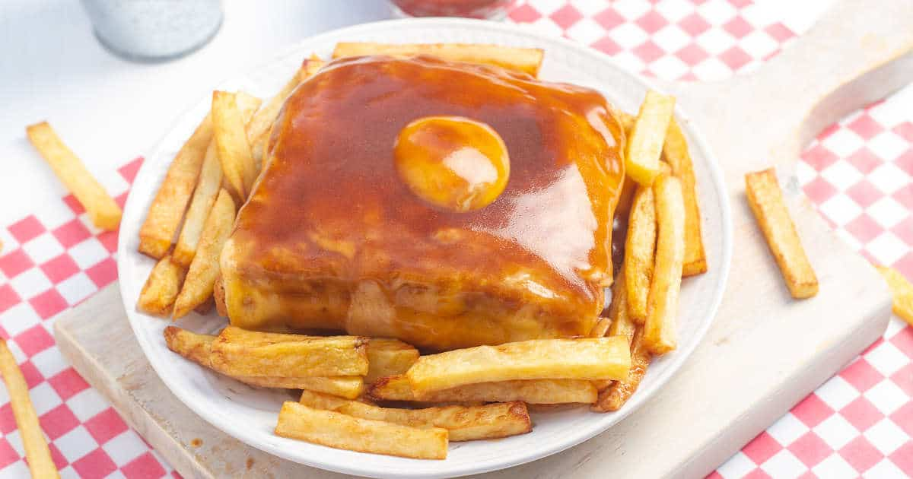

Francesinha

Description
A Francesinha is a fantastically extravagant experience of bread, meat, melty cheese, and sauce. This is a complicated sandwich.
There are some steps in the recipe, like cooking the steak and sausages, that you should probably be prepared to accomplish on your own without instruction before tackling the Francesinha. Read the notes at the bottom of this recipe before starting.
Ingredients
Meat
- 3 ounces chorizo sausage
- 4 to 5 ounces Italian sausage, casing removed
- 1 thin steak (like a boneless ribeye or sirloin)
Francesinha sauce
- 2 tablespoons butter
- 1 tablespoon olive oil
- 1⁄2 large Spanish or Vidalia onion, diced
- 4 garlic cloves, minced or pressed
- 14 ounce can diced tomatoes
- 2 tablespoon peri peri sauce (can use another hot sauce)
- 2 bay leaves
- 1 cup beef broth
- 1 tablespoon Better than Bouillon
- 16 ounces lager beer
- 2⁄3 cup port wine
- 2 tablespoons whiskey
- 1 tablespoon Worcestershire sauce
- salt and ground black pepper
- 1 tablespoon cornstarch
- ⁄4 cup milk
Sandwich assembly
- french fries (optional - frozen or homemade)
- 1 large egg
- 2 slices of white bread, toasted
- 5 slices of Havarti cheese
- steak (from above)
- sausages (from above)
- 2 slices of deli ham
- Francesinha sauce (from above)
Steps
- Meat: cook the steak and sausages in a large pot over medium heat. Once the steak and sausages are cooked to your satisfaction, remove them to a plate to rest. At this point you are going to cook the sauce, and the meat will grow cold, but the point here is that the leftover flavor left in the pot from cooking the steak and sausage will go forward into the sauce. You will have an opportunity to heat the meat up again before sandwiching.
- Francesinha sauce: reduce the heat under the pot to around medium or just below medium and then add the butter and olive oil. Once the butter is melted and bubbly, add the diced onion and cook for 5 to 7 minutes to soften the onion.
- Once the onion is soft, add garlic and cook for 2 minutes.
- After 2 minutes, add all other ingredients for the Francesinha sauce except for the salt, pepper, milk, and cornstarch. Bring the sauce to a simmer and cook for around 30 minutes.
- After 30 minutes, remove bay leaves and if you have an immersion blender, you can blend the sauce to a consistent thickness. If you do not have an immersion blender, you can remove the pot at this point from the heat and blend the sauce in a traditional blender. But be careful because the heat in a blender can be a little explosive. You just want the sauce to be smooth.
- Once the sauce is blended and smooth, add the pot back to medium heat and add cornstarch and milk. Bring it to a simmer and cook for another 20 minutes. At this point you should taste the sauce and see if it needs salt and pepper. Season it until it tastes good to you.
- While this last 20 minutes of the sauce is cooking, it would be a good time to make french fries or bake some frozen fries in the oven.
- Sandwich assembly: build the sandwich by first toasting the bread. While the bread is toasting, fry a sunny-side-up egg in a pan over medium-low heat.
- While you are cooking the sunny-side-up egg, you can also warm up your steak and sausages. If your pan is large enough you can use the same one, otherwise, you may need two pans.
- Once the fries are ready and the egg is ready, it's time to build the sandwich. Add a slice of toast and top it with the first slice of Havarti cheese. Top the cheese with your thin steak. Place the two sausages on top of the steak and top the sausages with a couple of slices of ham. Then add the second slice of toasted bread to complete the sandwich.
- Top the sandwich with your sunny-side-up egg.
- Layer the additional four slices of Havarti cheese around the egg yolk (or cut half circles in the cheese slices to encircle the yolk). Make sure the cheese is slightly draping down the sides of the sandwich.
- Broil the sandwich in the oven with cheese on top until the cheese has fully melted down the sides. Keep a close eye on this process so that the egg yolk doesn't cook all the way through and harden.
- Add the sandwich to a bowl and add french fries around the sandwich.
- Pour Francesinha sauce on top of the sandwich and the fries into the bowl until everything is covered.
- Serve and enjoy.